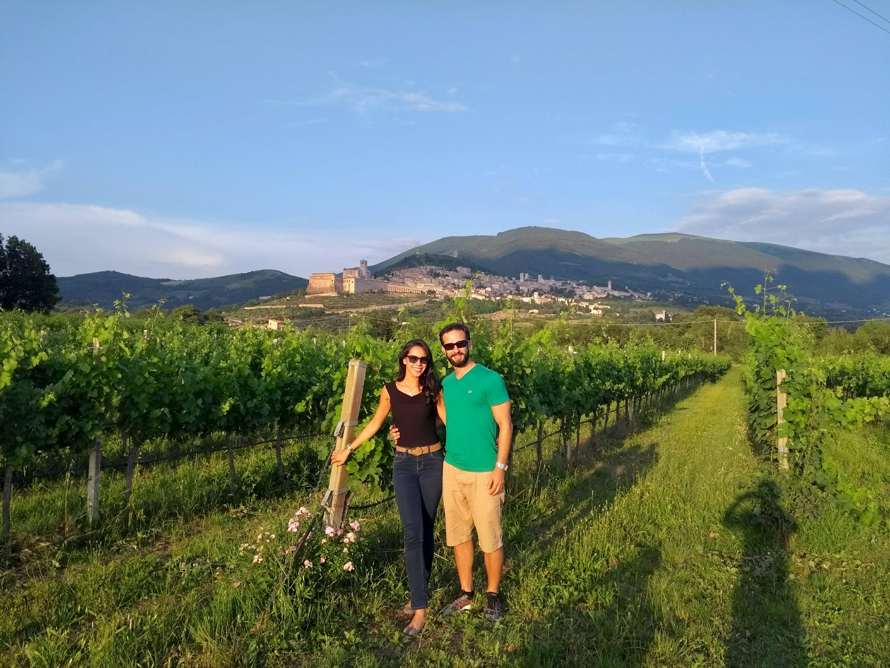

Casar na Itália – O Guia
Casar na Itália – O Guia
Casar na Itália – O Guia
Casar na Itália – O Guia
Tudo o que você precisa saber para transformar o sonho italiano em um plano real.
Clareza, segurança e leveza — escrito por quem viveu essa jornada.
QUERO MEU GUIA AGORAVocê vê a beleza. Mas o caminho até ela pode ser confuso, cheio de decisões, documentos e detalhes.A parte linda você vê nas fotos. A parte real — emocional, prática e até desafiadora — quase ninguém fala.
Eu vivi cada uma dessas etapas — e transformei todos esses obstáculos em um guia simples, direto e seguro.
Quero planejar com segurançaOrganizar um casamento na Itália parece mágico — mas também pode gerar ansiedade, medo de errar e sensação de estar perdida.
Este vídeo é o primeiro passo para mudar isso:
Clareza, organização e um passo a passo realista para transformar seu sonho italiano em um plano possível.
“Sou madrinha da Viviane e posso dizer que foi um dos casamentos mais
lindos que já vivi.
A distância nunca foi um obstáculo — tudo foi organizado de forma impecável:
a cidade, a igreja, a hospedagem, cada encontro com os convidados.
Foram dias que pareceram um conto de fadas.
Um daqueles momentos que ficam para sempre na memória.”
Depoimentos reais de pessoas que testemunharam cada detalhe dessa jornada.
Uma brasileira que realizou o sonho de casar na Itália — e transformou sua experiência real em um guia claro, humano e possível para outras noivas.
 No dia mais especial da minha vida.
No dia mais especial da minha vida.

No vinhedo em Assis, onde tudo começou.Eu sou a Vívi — esposa, sonhadora e apaixonada pela Itália. Meu casamento foi planejado a distância, com muito amor, erros, acertos e descobertas que ninguém conta.
Vivi na pele o que é escolher uma cidade, contratar assessoria, lidar com fornecedores, organizar hóspedes, lidar com imprevistos e ainda assim fazer tudo acontecer de forma leve e inesquecível.
Depois de tantos pedidos das amigas e seguidoras, reuni tudo que aprendi em um guia direto, objetivo e real — criado para te dar clareza e segurança desde o primeiro passo.
Se eu consegui, você também consegue — e eu te mostro o caminho.
Cada guia da coleção nasceu do desejo de tornar acessível a experiência de casar em um dos lugares mais inspiradores do mundo. De forma prática, amorosa e real, a coleção ensina noivas a planejar o casamento dos sonhos com clareza, fé e propósito.

R$ 268,00
R$ 167,00
ou 12x de R$ 17,27
Você tem uma semana completa para ler, testar e sentir o guia.
Se achar que não te ajudou ou não trouxe clareza suficiente, eu devolvo 100% do seu investimento — sem perguntas.

Sim! O passo a passo vale para qualquer região italiana.
Não. O guia mostra exatamente o que fazer sem dominar o idioma.
De 3 a 12 meses — depende apenas dos seus documentos.
Sim, o guia existe justamente para tornar isso possível e seguro.
Sim! Você recebe o contato direto para tirar dúvidas essenciais.
Seu casamento dos sonhos começa com informação clara e direção segura.
Quero meu guia agora